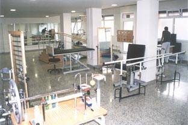

Servei Integral de Rehabilitació Neurològica
carrer Fraga, 3 - 15 · 932 743 796 · Sant Andreu de Palomar
Centre de Rehabilitació que tracta persones amb alteracions físiques, cognitives i socials,
de manera integral i individualitzada, tenint en compte les alteracions pròpies de cada persona.
| Fisioteràpia |

|
Psicologia | ||
| Pedagogia | Logopèdia |

|
carrer
de Fraga, 3 - 15 Sant Andreu de
Palomar |
|
|
|